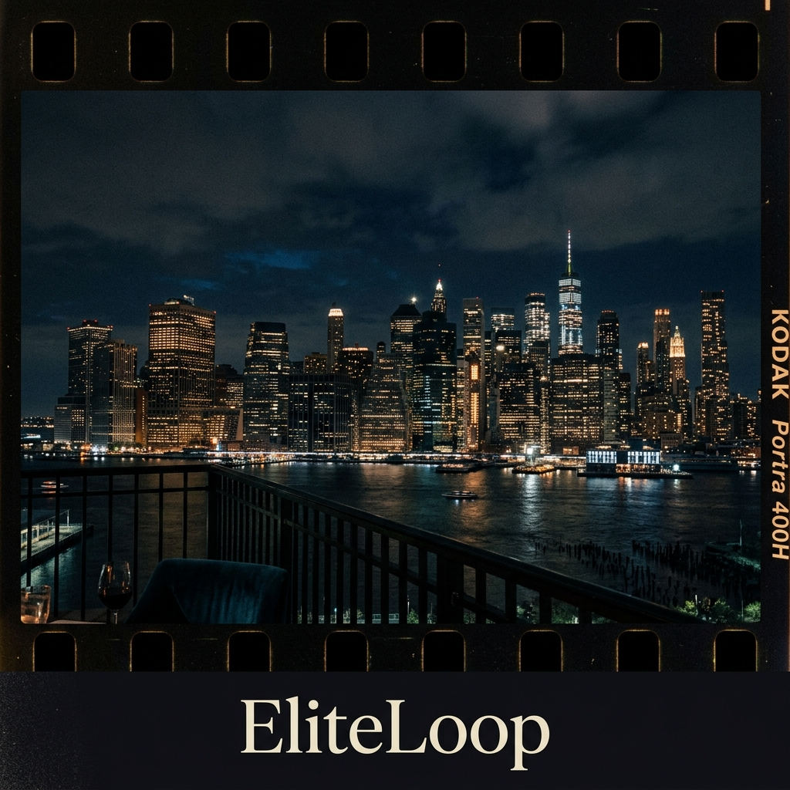
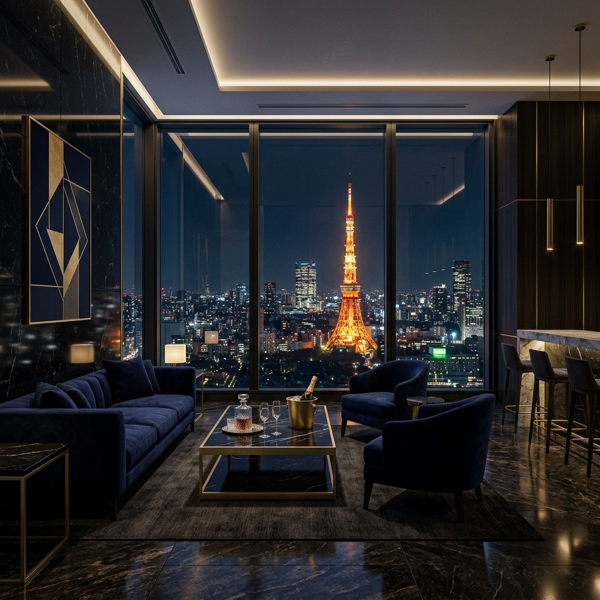
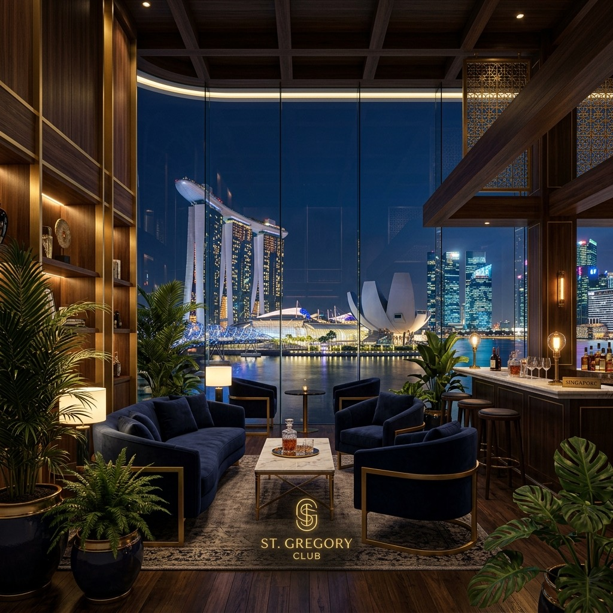
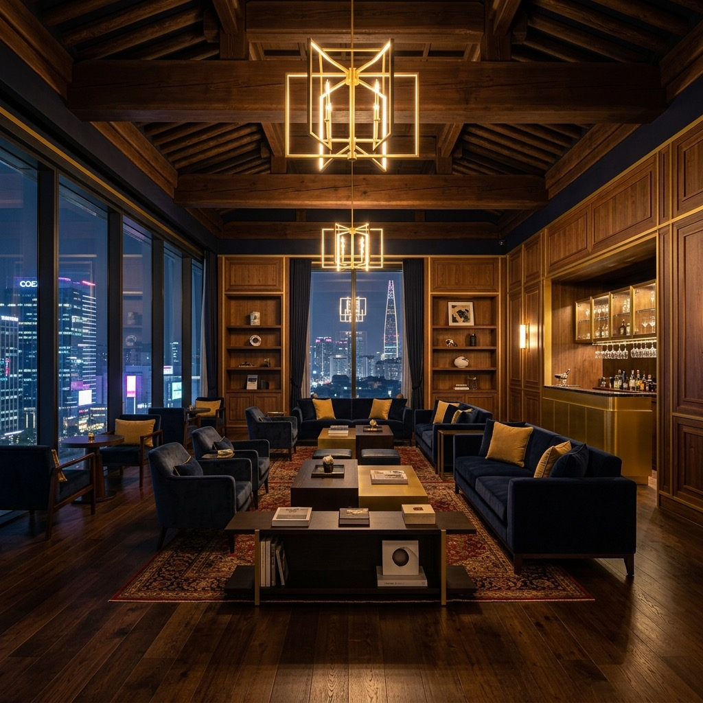
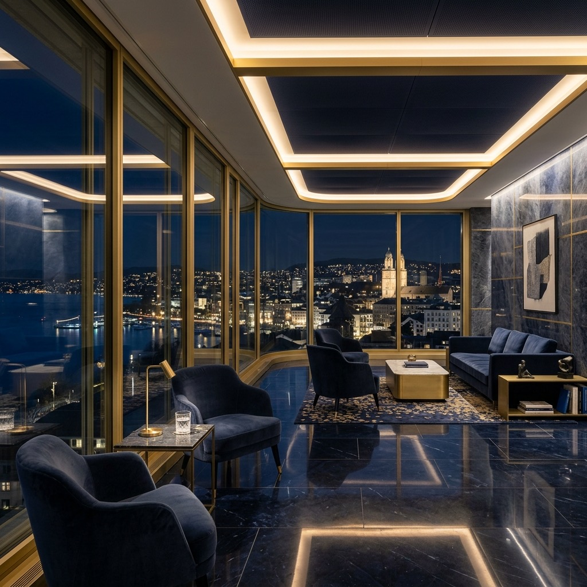

Explore EliteLoop's featured locations through scene reports, city dispatches, and premium social discovery signals built to lead readers from search to app download.
Daily intelligence on private social discovery, access psychology, and premium city momentum — updated every day across EliteLoop's worldwide signal layer.
Global Pulse is EliteLoop's worldwide editorial signal layer. Featured City Guides are location-specific hubs built around private social discovery, scene reports, and app download intent in each city.
Rooftop networking, luxury hospitality events, and the Gulf's most exclusive social calendar.
Explore Dubai →
Financial elite, unlisted Sunday circles, and high-trust social networking in NoHo and SoHo.
Explore New York →Mayfair spring circuit, 5 Hertford Street, Annabel's residency, and the private rooms behind the gallery season.
Explore London →
Ginza omakase counters, Nishiazabu private rooms, and the shokai access system behind Tokyo's most deliberate social season.
Explore Tokyo →
Asia's financial gateway — private wealth circles, regulated asset networking, and the continent's most curated business social scene.
Explore Singapore →Where two continents meet — exclusive Bosphorus events, Sónar Istanbul, and the city's elite social spring season.
Explore Istanbul →Fashion capital meets private equity — Brera district dinners, design week networking, and Europe's most stylish business social layer.
Explore Milan →Quiet luxury and the city's most curated social circles — from Saint-Germain salons to Marais dinners.
Explore Paris →
Cheongdam dinners, founder tables, and Seoul's higher-trust social rooms where context matters more than visibility.
Explore Seoul →
Private banking dinners, Crypto Valley breakfasts, and the quietest high-trust social capital in Europe.
Explore Zurich →